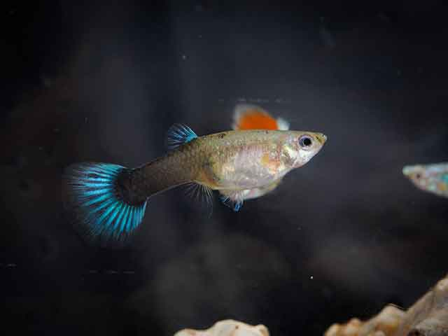
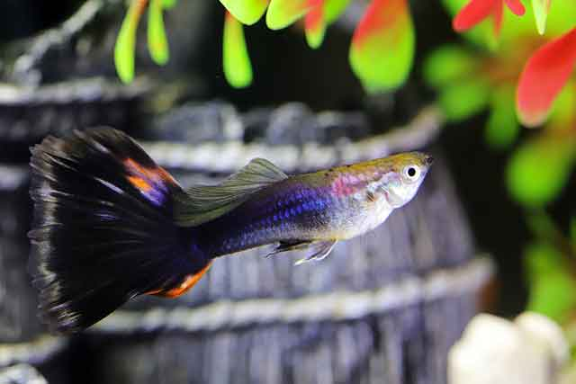
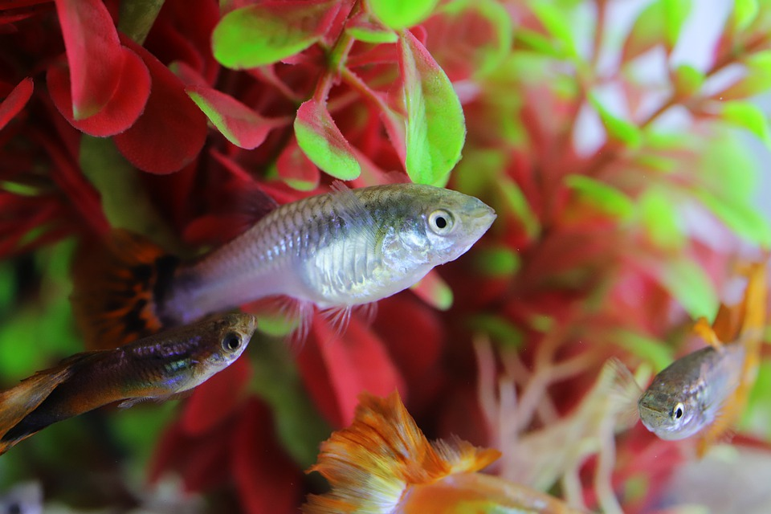
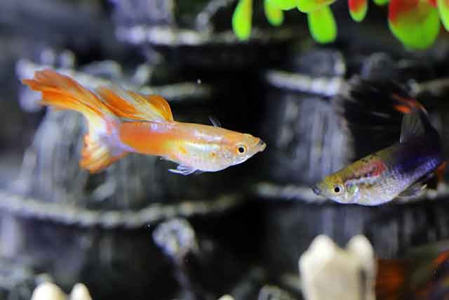
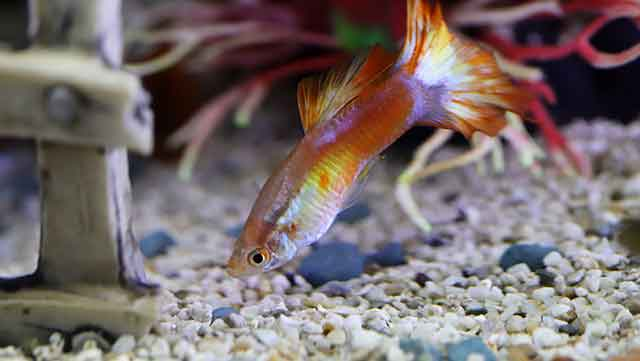

열대어 키우기, 초보자에게 쉬운 구피! 어떻게 키우면 될까요?
열대어를 키우는 사람도 적지 않습니다. 한 번 빠지면 헤어나오기 힘든 것이 바로 열대어 키우는 것이라고 합니다. 열대어 종류는 굉장히 다양한 편입니다. 그래서 열대어에 관심을 끌게 되면 무궁무진한 개체 수에 빠져나오지 못하는 것이죠. 물론, 나쁜 예도 있습니다. 관상용 동물을 그저 돈벌이로 보고 접근하는 사람이 있죠. 그래서 무지막지하게 변종을 만들어 내 새로운 종이라고 소개하며 일을 벌이는 사람도 있습니다. 물론, 관심을 두고 키우기 시작했다면, 이런 방식은 지양해야겠죠. 열대어 키우기, 초보자에게 쉬운 구피! 어떻게 키우면 되는지 알아볼게요.
"구피의 종류는 다양하다."
구피는 열대어 중에서도 키우기 쉬운 종으로 잘 알려졌습니다. 그래서 알록달록 눈길을 사로잡는 종이 많은 편입니다. 구피라고 해서 단 하나의 구피만 있는 것은 아니지요.
구피는 더블시위드 구피, 레드테일 구피, 레드코브라 구피, 킹코브라 구피, 야생코브라구피, 메탈릭옐로우 구피 등 정말 다양한 구피가 있습니다.
지금도 끊임없이 다양한 변종을 만들어 내고 있어 구피는 유행을 많이 타는 열대어종이기도 합니다. 즉, 새로운 변종 구피가 나오면 그 흐름을 쫓아가는 사람이 많다는 거죠.
"초보자에게 쉬운 구피"
열대어를 기르고 싶어 하는 사람에게 가장 많이 추천되는 종이 바로 구피입니다. 구피는 키우는 난이도가 쉽습니다. 그 이유로는 성격이 온화한 편입니다. 성격이 모나면 다른 열대어종과 어울리기가 힘들고 스스로 스트레스도 많이 받는 편이죠. 하지만 구피는 성격도 온화하고 외부 환경 적응력도 좋은 편이라 많은 분이 쉽게 죽이지 않고 기를 수 있는 종이기도 합니다.
"번식왕 구피"
건강하고 튼튼하며 번식력도 좋아서 많은 개체를 만들어 낼 수 있는 종이기도 합니다. 한 번의 교미로 여러 번 수정할 수 있습니다. 이렇게 가능한 이유는 한 번의 교미를 통해서 정자를 저장할 수 있는 능력이 있습니다. 즉, 교미 한 번으로 여러 번 스스로 수정하는 것이죠. 구피는 20~26일 정도 새끼를 낳습니다. 한 번에 낳는 새끼도 많은 편이죠. 적게는 스무 마리에서 많게는 백 마리까지 상당히 많은 양의 새끼를 낳습니다.
"같은 구피라 해도 똑같은 방법으로 키우지 않아요"
중요한 것은 같은 구피라고 해서 다 똑같은 방법으로 구피를 키우는 것은 아닙니다. 구피라는 공통점도 존재하지만, 각각의 변종마다 가진 특성이 달라지기도 합니다. 그래서 그 특성을 잘 이해하고 기르는 것이 중요합니다.
기본적으로 좋은 물에서 길어야 하는 것은 공통적인 사항입니다. 물고기가 물에서 사는 데 물이 좋지 않으면 잘 성장할 수 없겠죠.
수온이나 여과기 그리고 다른 환경적인 요소를 적절히 배치하는 것도 건강하게 구피를 키우는 방법이기도 합니다.
구피도 하나의 생명입니다. 관상어를 무작정 돈으로 보는 행동은 옳지 않습니다. 무엇보다 무작정 키우기 보다는 구피의 특성을 이해하고 또, 스트레스 받지 않도록 단독 어항에서 키우는 것이 맞습니다. 어항에서 활개치는 구피의 모습, 정성과 노력이 충분히 보답되는 시간이 아닐까 싶습니다.
[출처] 열대어 키우기, 초보자에게 쉬운 구피! 어떻게 키우면 될까요? ｜ 작성자 쿠즈펫